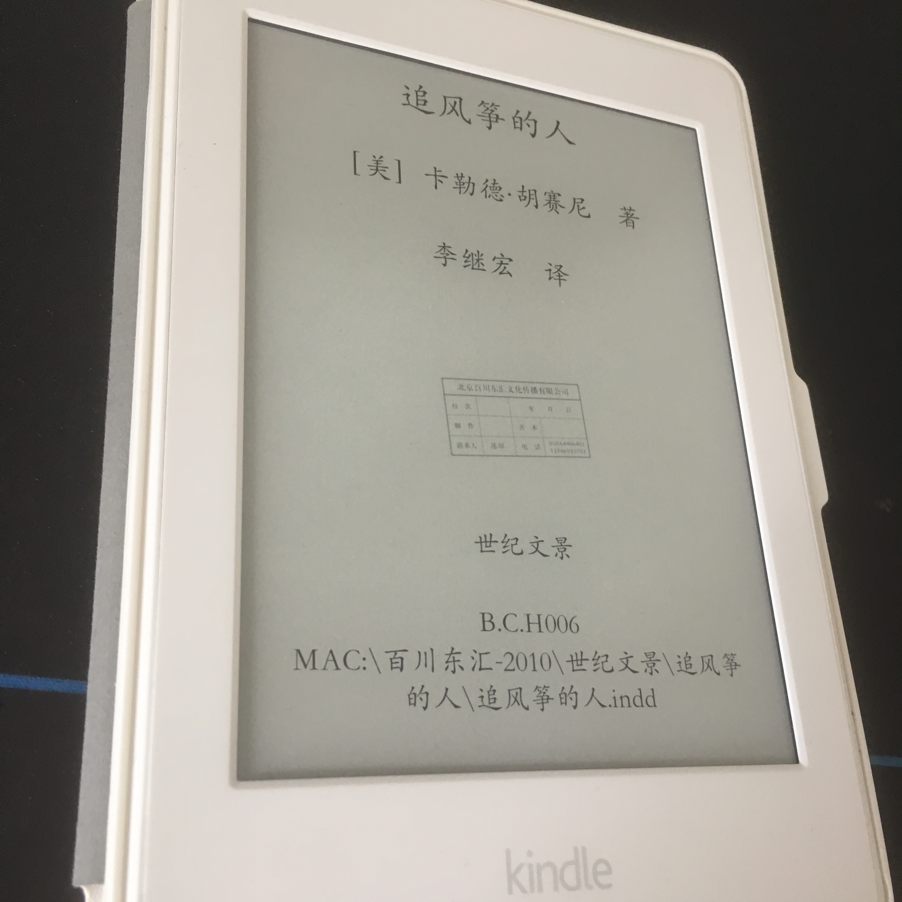

上周周五回家的公交车上，鬼使神差的脑子里突然想买个kindle来看书。考虑了一路，后面还是果断入手了一个kpw。以前虽然也看书，但是毕竟纸质书的价格摆在那边， txt电子书的排版格式让人不忍直视，pdf格式的又让人感到非常的僵硬。所有自己还是特别期待kindle到时候带给我的惊喜。
京东物流还时给力的，周五晚上下得单，周六下午就到了。第一本我看的书，就是《追风筝的人》。这本书之前在我 大学舍友的桌上看到过，只是那时候并不能静下心去好好读一读，把他作为我kindle的第一本还是非常值得的。
《追风筝的人》口碑很好，2003出版，2006引入中国。这么多年，一直都霸占着推荐榜和畅销榜前列。最近工作上的事情相对比较少， 我也得以静下心来好好的看完这本书。奈何我的经历和年纪还不够，并没有跟网上很多人说的看完泪流满面，内心久久不能平静之类的种种心理波动。在这里，我就只是分享自己不深刻，甚至可能比较稚嫩的一些看法。
主人公阿米尔的童年充满了与哈桑的美好回忆，但是也充满了私欲、嫉妒、谎言、懦弱、逃避。他希望独自享有父亲的爱，他希望突出自己的优秀，他希望享受着自己优越的身份地位， 所以他把哈桑当成自己的玩伴却始终不愿意承认他是自己的朋友。在哈桑倒在雪地上的时候，阿米尔只是握紧的拳头，还是跑掉了。
读到这里的时候，很多人会觉得愤怒，他们会觉得哈桑为阿米尔做了那么多，扛下了多少责，现在在他即将丧失尊严的时候，阿米尔居然还是这般懦弱和无能。 但这就是人性，面对一个你觉得算不上自己的朋友，可能只是算是一个可以当玩伴的仆人，放弃了为他可能是无用的出头。换作是你，我觉得很多人也都是这种选择。
虽然后面阿米尔一直被内心的愧疚所折磨，在拉辛汗的劝导下开始了一场对自己之前所做过错的救赎之旅。但那个为他，千千万万遍的哈桑已经不在了。只是寻求给予哈桑的孩子索拉博最大的帮助，但是因为一句话，让这个经历过无数伤痛的孩子开始变得冷漠。眼神就像哈桑和阿米尔 分开的时候那般无神和漠然。
阿米尔觉得这是自己的一次救赎，但我觉得不算。哈桑，这个他最应该换得救赎的人已经不在，哈桑的孩子也只是得到了他当前物质上一些好的照顾。就算是把索拉博从阿塞尔手上就出来，阿米尔可能还得感谢索拉博的救命之举。
每个人都会犯错，但不是每个错误都能被原谅，都能得到救赎。我们所能做的，只能是尽早以及尽力的去弥补自己的过失。希望你们和我都不要对别人犯这种错误！
PS：过了多年，第一次写这种如作文般的读后感。心里满是一种对文字驾驭的无力感，文字功底真心还需磨砺。